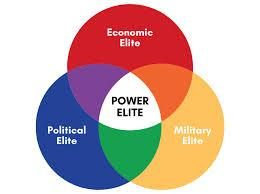
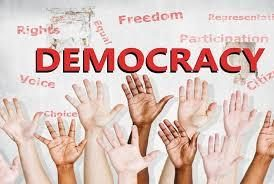
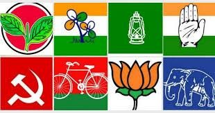
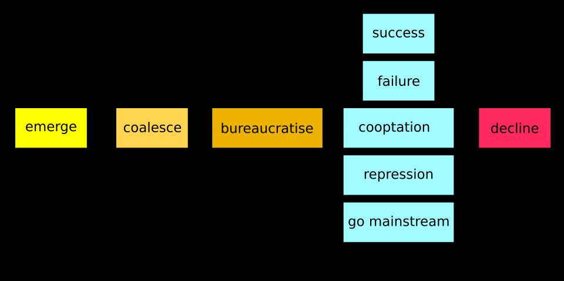
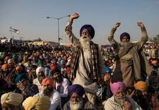
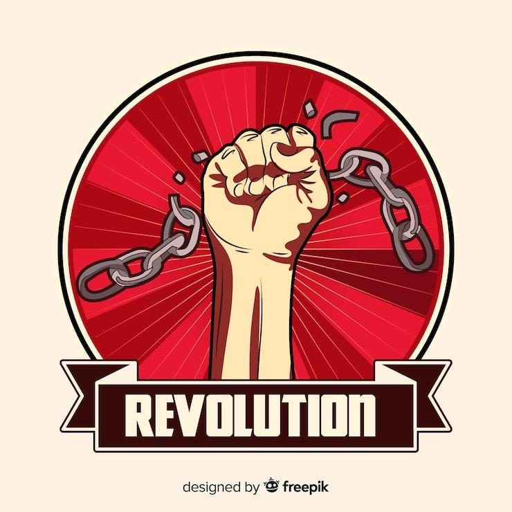
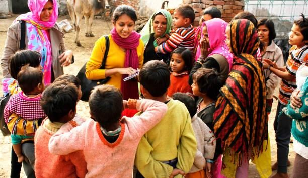

Politics and SocietyHigh priority
Open with the theory (elite, pluralist, Marxist), then test it on Indian democracy: dynasties, pressure groups, farmers' protest, Dalit movements and civil society.
Chapter map#
- Politics and society
Power
- Parsons
- Marx
- Althusser
Elite theory
- Pareto
- Mosca
- Michels
- Mills
Pluralism
- Dahl
- Rose
- Aron
Democracy
- Direct
- Indirect
- Features
Parties and pressure groups
- Weber
- Antagonistic cooperation
Social movements
- Blumer
- Smelser
- Tilly
- NSM
- Online
State, citizenship, civil society
- Weber
- Marshall
- India's roots
Exam lens#
The story first#
In simple words#
- Power: Parsons = collective resource; Marx = class domination; elites = minority rule; pluralists = dispersed bargaining.
- Pareto (circulation, lions and foxes), Mosca (political formula), Michels (iron law), Mills (institutional power elite).
- Pressure groups are sectional and do not contest elections; parties do.
- Marshall: civil, political, social rights; civil society sits between state and market.
| Term | In plain words |
|---|---|
| Power | Capacity to achieve goals even against resistance (as the handout frames it). |
| Circulation of elites | Pareto: new elites replace decadent old ones. |
| Political formula | Mosca: beliefs that legitimise elite rule. |
| Iron law of oligarchy | Michels: every organisation ends up ruled by a few leaders. |
| Power elite | Mills: coincidence of economic, political and military power. |
| Pluralism | Power dispersed among many competing groups. |
| Antagonistic cooperation | Pressure groups both challenge and support parties. |
| New social movements | Post-1960s movements on identity, rights and global issues. |
| Co-optation | Absorption of movement leaders into the establishment. |
| Civil society | Voluntary organised life outside state and market. |
1 · Politics and Society#



- Politics and society are deeply interwoven, with power lying at the heart of this relationship. Power, in sociological terms, refers to the capacity of individuals or groups to influence others and control resources or decision - making processes, even in the face of resistance.
- Politics, then, is the structured and institutionalized expression of power - it involves the struggle over who gets what, when, and how.
- Across history and cultures, politics has revolved around contestations for power: between classes, castes, genders, ethnicities, and ideologies.
- Understanding politics sociologically using different theories allows us to explore not just state institutions but also how power operates in everyday life and social relationships.
- From a functional perspective, power differentials in society are seen as beneficial for the smooth functioning and integration of the social system.Talcott Parsons, a key proponent of functionalism, regarded power as a societal resource.
- According to him, power is the generalized capacity of a society to achieve its collective goals.
- Parsons compares political power with money Parsons likens politicians to banks and power to currency.
- Just as individuals deposit money in a bank with the expectation of returns, citizens deposit power in their political leaders through elections, hoping that leaders will use it to achieve shared goals.
- If political leaders fail to deliver, voters can withdraw their support and reallocate their political "deposits" elsewhere.
- In this view, power is not coercive but consensual, grounded in legitimacy and shared norms that sustain collective life.
- In contrast, the Marxist theory of power views the state and political institutions as components of the superstructure that serve to uphold the economic base i.e. the capitalist mode of production.
- For Karl Marx, the state is essentially ‘a committee for managing the common affairs of the bourgeoisie’.
- Marxists argue that the state exists primarily to maintain capitalist class domination.
- Marx views the political system as services the interests of capitalists Louis Althusser further elaborated this position by introducing the concepts of the repressive state apparatus (police, army, etc.) and the ideological state apparatus (media, education, religion), which together ensure the continued subjugation of the working class.
- Through these mechanisms, the capitalist state convinces the masses that the existing economic and political order is natural and just.
- Scholars like Westergaard and Ressler argue that welfare provisions in capitalist countries are superficial concessions designed to diffuse revolutionary tendencies and stabilize the capitalist system, without altering the fundamental structure of inequality.
- The ruling class ideology remains dominant and unchallenged, making the capitalist system appear desirable and inevitable.
- Classical Elite Theory
- In his magnum opus The Mind and Society (1916), Pareto defined elites as those individuals who achieve the highest indices in their field of activity, whether economics, politics, military, or arts.
- For Pareto, elites are not defined by birth but by their abilities and performances - a meritocratic notion at first glance.
- Pareto saw elites possessing lion-like and fox-like qualities Pareto divided elites into two broad categories:
- 1. Governing elites: Those who hold political power and rule directly.
- 2. Non - governing elites: Those with influence in non - political spheres - industrialists, intellectuals, artists, and scientists.
- Classical elite theory contends that elite rule is inevitable - in all societies, a small and organized elite rules over a disorganized majority.
- According to Pareto, elites are set apart by distinct psychological traits.
- These traits enable them to dominate and manipulate social structures effectively.
- Two such elite types are:
- 1. Lions: Representing conservative, force - driven, tradition - bound elites.
- They rely on strength, loyalty, and authority.
- 2. Foxes: Cunning, innovative, and manipulative elites who use persuasion, strategy, and deception.
- A central concept in Pareto’s theory is the “circulation of elites” - the process by which new elites emerge to replace old ones who have become decadent or ineffective.
- This dynamic prevents stagnation and keeps the political structure alive, but it also underscores the immutability of elite rule.
- As he put it,“History is a graveyard of aristocracies” - highlighting how every dominant elite eventually declines and is replaced.
- Gaetano Mosca in his work The Ruling Class (1896) argued that in every society, power is always held by a minority, which he called the ruling class or political elite, while the majority remains ruled.
- At the core of Mosca’s theory is the idea that society is divided into two classes:
- - a small organized minority that governs, and
- - a large unorganized majority that is governed.
- The minority rules not because it is morally superior, but because it is better organized, cohesive, and capable of collective action, whereas the masses are fragmented and lack coordination.
- Mosca rejected the idea of pure democracy.
- Even in democratic systems, he argued, power is exercised by elites - political leaders, bureaucrats, party officials, and opinion-makers-who govern in the name of the people.
- To legitimize their rule, elites develop what Mosca called a “political formula” - a set of beliefs, ideologies, and values (such as democracy, religion, nationalism, or socialism) that justify elite dominance and secure popular consent.
- Thus, rule is maintained not only through force but also through ideological legitimacy.
- Mosca also emphasized the circulation of elites.
- For stability, ruling elites must periodically absorb new members from the lower strata.
- If elites become closed, rigid, or self-serving, they risk revolt or replacement by a new elite.
- Hence, social change does not eliminate elites; it merely replaces one elite with another.
- Iron Law of Oligarchy Robert Michels formulated a grim corollary to elite theory in his book Political Parties (1911), where he argued that “who says organization says oligarchy.” According to Michels, all large - scale societies - even those committed to democratic ideals - inevitably develop oligarchic tendencies.
- In all political systems, even in a democracy, people need to organize in order to articulate their interests.
- As organizations grow, they require specialization and delegation, leading to the emergence of a leadership class.
- Leaders accumulate knowledge, technical expertise, and control over resources.
- Eventually, these leaders become indispensable and develop interests separate from the rank - and - file members.
- Thus,democracy is self-defeating - it generates structures that concentrate power in the hands of a few.
- Michels observed this in the German Social Democratic Party and concluded that oligarchy is the “iron law” of all complex organizations.
- The classical elite theorists challenged the Enlightenment optimism about mass rule and political equality.
- Their sharpest insight is the inevitability of elite rule: Whether through wealth, intellect, organization, or manipulation, elites always dominate the many.
- Elites may decline and get replaced, new ones may arise, but elite rule persists.
- Comparison of Elite Theories of Pareto, Mosca, and Michels
| Basis | Pareto | Mosca | Michels |
|---|---|---|---|
| Circulation of | |||
| Main idea | Circulation of elites | Political class | Iron law of oligarchy |
| Why elites rule | Superior abilities | Better organization | Organizational necessity |
| Can elites change? | Yes, through circulation | Yes, elites absorb new members | Leadership may change but oligarchy sustains |
| View of democracy | Elite rule inevitable | Elite rule inevitable | Democracy eventually becomes oligarchy |
- Relevance of classical elite theory today Classical elite theory remains relevant today.
- Political parties, business corporations, bureaucracy, and the media continue to be dominated by a relatively small group of elites.
- Elections may change the ruling party, or the ruling parties may change.
- But leadership often passes from one elite group to another rather than to ordinary citizens.
- For example, political dynasties such as the Gandhis in India, Bhuttos in Pakistan, and the Khamenei family in Iran continue to play an important role in national politics.
- Similarly, corporate elites such as the Tatas, Birlas, and Ambanis of India and Buffetts, Rockefellers, and Fords in USA exercise considerable economic influence.
- The rise of technology leaders like Sundar Pichai and Satya Nadella illustrates the capacity of the global elites to absorb newer ones.
- These examples amply reflect Pareto's idea of the circulation of elites, where old elites gradually give way to new ones, but elite rule itself continues.
- Modern Elite Theory In his seminal work The Power Elite (1956), American sociologist C.
- Wright Mills presented a modern and context - specific interpretation of elite theory, focusing particularly on the structure of power in 20th - century America.
- Unlike classical elite theorists who saw elite rule as inevitable and rooted in individual traits or psychological characteristics, Mills argued that elite domination in the United States is a relatively recent development, arising from specific institutional arrangements in modern American society.
- It is not an eternal or universal feature, but a consequence of the historical and structural convergence of power among key institutions in the U.S.
- According to Mills, elite rule is the coincidence of economic, political and military power Mills argued that American society in the 20th century came to be dominated by a “power elite” - a small, tightly connected group of individuals who occupy the command posts in three major institutional spheres:big business, the military, and the federal government.
- It is not the psychological traits or inherent superiority of these individuals that place them in power, but the institutional concentration of authority and the interlocking nature of these institutions.
- This convergence has led to the formation of a unified elite that collectively shapes national policy and controls resources, leaving masses largely excluded from meaningful participation.
- Mills emphasized that these elites are not separate ruling classes in their separate domains, but have increasingly become integrated and indistinguishable in their power and purpose.
- What binds them together is not just their shared access to institutional power, but also their similar social background.
- Most of them belong to what Andrew Hacker later described as the WASP elite - overwhelmingly White, Anglo - Saxon, Protestant men, who enjoy privileges such as elite education and generational wealth.
- They frequent the same private clubs, attend the same elite universities, and often marry within the same social networks.
- Over time, their social, economic, and political interests align, creating an informal yet potent ruling bloc.
- Mills also highlighted the growing fusion between corporate capitalism and the military establishment, giving rise to what later came to be known as the military - industrial complex.
- He observed that American capitalism has increasingly become military capitalism, where large corporations, defense contractors, and military leaders benefit from war and the continuous preparation for war.
- The government, particularly the executive branch, facilitates this system by channelling public resources into defense spending and international interventions.
- Thus, warfare becomes not just a matter of national security, but a source of economic profit and institutional expansion, reinforcing the dominance of the power elite.
- This power elite, Mills warned, enjoys unprecedented power.
- It takes major decisions affecting millions of Americans - and indeed people around the world - without any democratic accountability .
- In sum, Mills’ theory critiques how a small group of interconnected elites in business, government, and the military dominate American society.
2 · Pluralist Theory#
- Pluralist theory of power holds that in a large - scale and complex modern society, there exist multiple social groups and identities - based on caste, class, region, religion, language, gender, and other axes of differentiation.
- Politics, in this view, is essentially a struggle among these diverse groups to secure a greater share of societal resources, recognition, and influence.
- These groups elect their representatives who act as their honest brokers in the political arena, advancing their demands and safeguarding their interests.
- Elected leaders are often seen not as autonomous actors, but as representatives who negotiate on behalf of their communities.
- The government, in turn, functions as a balancer, attempting to accommodate the competing demands of different social groups.
- Governance is thus viewed as a process of compromise and negotiation, rather than imposition.
- The state’s role is not to favour one group over another, but to act as a neutral referee, ensuring that all groups have a fair opportunity to influence public policy.
- Robert Dahl, a key theorist of pluralism, emphasized that power in a democracy is widely dispersed across multiple actors, and not concentrated in the hands of a few.
- According to him, decision - making is open, competitive, and responsive.
- No single group remains permanently or excessively dominant.
- Different interest groups dominate different arenas at different times, creating a dynamic balance.
- The state is a platform for negotiation among a diversity of interests.
- Arnold Rose and Raymond Aron further enriched the pluralist perspective by highlighting the importance of negotiation, compromise, and institutional mediation in democratic societies.
- Arnold Rose emphasized that conflict among groups is not necessarily dysfunctional, but rather a healthy feature of democracy that allows multiple interests to be voiced and balanced.
- Raymond Aron viewed modern societies as diverse and complex, where the state must act as an arbiter among competing interests, rather than as an agent of any one class or ideology.
- Both of them reject the monolithic views of power and stressed that democratic stability depends on the ongoing interplay of diverse social forces within a legitimate institutional framework.
- Indian politicians come from diverse backgrounds and represent different sections of society Pluralists also highlight the crucial role of pressure groups, media, civil society organizations, trade unions, and interest groups in the democratic process.
- These actors constantly engage in lobbying, mobilization, protest, and dialogue to influence public decision - making.
- The political process is thus characterized by bargaining among the representatives of different sections of the society.
- This approach is sometimes referred to as elite pluralism, because it does not see any contradiction between elite participation and democratic dispersion of power.
- As long as different elites represent different constituencies and interests, and there is scope for alternation and accountability , the system remains democratic and inclusive.
- Pluralism is, therefore, a theory that appreciates modern liberal democracies, where multiple social forces coexist, contest, and cooperate, and where power is not monopolized, but is negotiated in a continuous and inclusive process.
3 · Democracy#


- Democracy is a system of government in which the ultimate authority lies with the people.
- It is a form of government where the supreme power is vested in the people and exercised by them directly or indirectly through a system of representation, typically involving periodically held free and fair elections.
- It is based on the principles of political equality, popular sovereignty, and accountability.
- Democracy is arguably the most popular form of government A democratic system is marked by universal adult franchise, where every adult citizen has the right to vote, regardless of class, religion, gender, or education.
- Regular, free and fair elections ensure that leaders are accountable to the people.
- The presence of multiple political parties and competitive elections allows genuine choice to voters.Freedom of the press enables open discussion and criticism of government actions.
- The participation of citizens goes beyond voting, with public involvement through protests, petitions, and civic activities being essential to a healthy democracy.
- An independent body to conduct elections guarantees the integrity of the electoral process, while the rule of law ensures that laws apply equally to all.
- Democracy also upholds fundamental liberties and the right to dissent.
- A vibrant civil society - comprising NGOs, interest groups, and the media - acts as a bridge between the state and society, contributing to better governance.
- Democracy can be broadly classified into two forms:direct and indirect.
- In a direct democracy, citizens themselves participate in decision - making, as seen in ancient Athens or in modern referenda held in Switzerland.
- However, in large, complex societies, direct participation is impractical, which is why indirect or representative democracy is more common.
- Here, citizens elect representatives who make laws and policies on their behalf.
- Countries like India, the United States, and most modern democracies follow this model.
- Why Is Democracy Popular? Democracy is widely celebrated as the most inclusive and people - centric form of governance.
- At its core, democracy protects the rights and freedoms of individuals, ensuring that every citizen - regardless of caste, class, gender, or creed - has a say in the way they are governed.
- It enshrines fundamental values like freedom of speech, freedom of association, freedom of religion, and the right to dissent, allowing citizens to live with dignity and self - respect.
- These liberties are safeguarded through constitutional mechanisms and the rule of law.
- Democracy thus creates a political environment where people are not only protected from the arbitrary use of state power but are also empowered to influence the direction of governance.
- One of the most vital features of democracy is the periodic holding of free and fair elections, through which people choose their representatives.
- This ensures accountability of the political leadership and gives citizens the opportunity to change the government if they are dissatisfied.
- By casting their votes, people are able to participate directly in the political process and influence decision - making at the highest levels.
- This creates a responsive and people - centric government where the elected leadership is expected to articulate and address the concerns, interests, and aspirations of the public.
- Political parties and leaders are incentivized to stay in touch with the needs of the masses, knowing that their continuance in power depends on the public’s approval.
- In multi - ethnic societies, democracy is often the only feasible and sustainable political system.
- Countries like India - with immense religious, linguistic, regional, and caste - based diversity - require a framework that can accommodate multiple identities and provide all communities with a voice.
- Democracy allows space for negotiation, and compromise among different interest groups, preventing domination by any single community.
- It ensures inclusive development and social harmony , offering a platform where historically marginalized groups can assert their rights and influence policy decisions.
- Democracy also enjoys a greater degree of legitimacy compared to authoritarian or oligarchic regimes.
- This is because it is based on popular consent and participation.
- People do not just accept the government; they constitute it through their vote.
- Legitimacy leads to voluntary compliance with laws and public policies, strengthening the state’s capacity to govern.
- Moreover, democratic systems are flexible and open to correction.
- When policies fail or leaders falter, the electorate can punish governments and bring in change through peaceful and constitutional means, rather than resorting to violence or revolution.
- Democracy also creates conditions for good governance.
- The checks and balances in a democratic polity ensure transparency and curb misuse of power.
- The presence of a free media, civil society, opposition parties, and independent judiciary helps hold the executive accountable.
- These institutional mechanisms together create a culture of openness and public scrutiny, which is essential for effective policy - making and implementation.
- In conclusion, democracy is not just a form of government - it is a way of life that empowers individuals, fosters mutual respect, and upholds human dignity.
- It provides a robust framework for resolving social conflicts peacefully, ensures that the state remains responsive and accountable, and facilitates long - term social and economic development.
4 · Political Parties#


- Political parties are organized associations that aim to capture state power by contesting elections in a democratic political system.
- They consist of individuals who come together based on shared ideologies, policy preferences, or interests and seek to shape governance through electoral victories.
- According to Max Weber, a political party is an organized structure that nominates candidates and contests elections with the ultimate aim of capturing political power.
- Political parties are the lifeblood of democratic politics From the perspective of pluralist theory, the existence of multiple political parties in a liberal democracy reflects a wide cross-section of interests and social identities.
- If certain communities or viewpoints are initially under - represented, liberal democracies provide the institutional space and freedom for these groups to organize and form their own parties.
- Over time, they can assert their presence in the political system.
- Thus, political parties become vehicles of inclusion, representation, and negotiation among competing interests.
- Moreover, pluralism holds that political parties, in order to gain widespread support, must appeal to diverse sections of society.
- Their composition, agenda, and policy positions tend to reflect the social heterogeneity and plural identities within society.
- This is both a strategic necessity for electoral success and a normative expectation of democratic functioning.
- Roles of Political Parties Representation of Interests: Political parties articulate the interests of various social ● groups - be they based on caste, class, region, religion, or occupation.
- Policy Formulation: Political parties play a crucial role in setting the political ● agenda.
- Their manifestos and election campaigns reflect ideological commitments and policy priorities, which help shape national and regional discourses. ● Political Mobilization: Parties mobilize public opinion, encourage voter participation, organize rallies, protests, and campaigns, and thereby contribute to a politically aware and active citizenry. ● Supplying Personnel for Government: In parliamentary democracies, the parties with majority support form the government.
- Political parties thus play a direct role in governing by providing leadership and administrative control.
- Political Socialization: Parties serve as schools of democracy.
- They educate their ● members and the public about political values, constitutional norms, and the workings of the democratic system.
- They shape the political culture of a society. ● Channel of Communication: Political parties act as a bridge between the people and the government.
- They convey public concerns to the government and explain governmental decisions to the public, thus ensuring a two - way flow of communication.
- Pressure Groups Pressure groups and interest groups are organized collectives that seek to influence public policy and decision - making without directly aspiring to political power themselves.
- They operate within the institutional framework of democracy and aim to protect, promote, or advance specific causes or sectional interests.
- These groups may be based on economic interests, social identities, ideological orientations, or professional affiliations.
- In the Indian context, prominent examples include the Bharatiya Kisan Union (farmers), All India Trade Union Congress (workers), FICCI and CII (industry bodies), and student organizations like the ABVP and NSUI.
- Religious groups, caste - based associations, and even NGOs can function as pressure groups when they seek to influence policy outcomes.
- Caste based associations are powerful pressure groups in India To secure their goals, pressure groups employ a wide range of techniques.
- These include organizing protests, rallies, demonstrations, hartals, and strikes, particularly when they feel their concerns are being ignored.
- They also work to mould public opinion by engaging with traditional media and social media, using pamphlets, opinion pieces, television debates, and online campaigns.
- Many engage in lobbying activities, often by cultivating relationships with bureaucrats, ministers, or influential legislators.
- Some fund or support candidates during elections to ensure their voices are heard in legislative spaces.
- Others function as knowledge partners or advocacy groups, drafting policy suggestions or offering technical advice to lawmakers and departments.
- In democracies, especially large and complex ones like India, pressure groups serve as an important feedback mechanism between the state and society.
- Pressure groups can have a significant influence on public policy.
- They do so by virtue of representing the interests of different sections of society.
- For example, sustained campaign by the Mazdoor Kisan Shakti Sangathan played an important role in the enactment of the Right to Information Act, 2005.
- Several farmers' organisations contributed to the repeal of the farm laws in 2021.
- Women's organisations campaigned for the Protection of Women from Domestic Violence Act, 2005; and disability rights groups contributed to the Rights of Persons with Disabilities Act, 2016.
5 · Relationship Between Pressure Groups and Political Parties#
- The relationship between pressure groups and political parties is both complementary and competitive.
- Political parties seek to capture and retain power through elections, and hence must project themselves as representatives of broad constituencies.
- Pressure groups, in contrast, are unapologetically sectional in character, often representing a specific occupation, class, or caste.
- While pressure groups do not contest elections, they seek to influence those who do .
- This results in a dynamic of antagonistic cooperation - where pressure groups criticize, protest against, or challenge ruling parties , yet also offer support and collaborate when their interests align.
- Political parties and governments may consult pressure groups while framing policies, appoint their members to advisory committees, or seek their endorsement during elections.
- Conversely, pressure groups often bargain for concessions,push for specific legislations, or try to block adverse decisions using their strength or public sympathy.
- From a pluralist standpoint , both political parties and pressure groups are vital to the health of a democratic polity.
- They represent different but equally necessary modes of political engagement.
- Political parties are central during elections, providing platforms, choices, and leadership. But democracy cannot be reduced to elections alone.
- Pressure groups and interest groups keep democracy alive and participatory between elections.
- They articulate the needs of various segments, mobilize opinion, hold governments accountable, and educate citizens on contemporary issues.
- In diverse, multi - ethnic, and stratified societies like India, such organized expressions of interest not only enhance political responsiveness but also act as shock absorbers, channeling discontent through institutional means rather than violent or anarchic ones.
- Far from being a threat to democracy, pressure groups are its lifeblood, giving voice to the voiceless and reminding rulers of their responsibilities.
- Criticisms of Democracy: a) Mob rule: Plato criticized democracy as a system where irrational and ill - informed masses rule, leading to poor decision - making and eventual degeneration into tyranny.
- In his view, democracy is amobocracy- rule by passions rather than reason - and he proposed instead the rule of thephilosopher - king, someone trained in wisdom and virtue, as the ideal form of governance. b) No real choice: From a Marxist perspective, liberal democracies offer only an illusion of choice.
- All major political parties broadly support capitalist interests, ensuring that substantive alternatives to the economic status quo are never presented.
- Elections become periodic rituals that pacify the masses without empowering them.
- Marxism holds that political power ultimately derives from economic power.
- Therefore, as long as vast economic inequality persists in society, real political equality or democratic rule is not possible.
- Western democracies, being built on a foundation of capitalist exploitation, cannot be genuinely democratic. c) Parliaments are symbolic: Lenin criticized Western liberal democracies by calling their parliaments “talking shops” where real decisions are not made.
- Instead, unelected bureaucrats, technocrats, and lobbyists - often aligned with capitalist interests - exercise actual control, making the democratic process a farce. d) Elites rule: Classical elite theorists like Pareto, Mosca, and Michels argue that all political systems, including democracies, are ultimately ruled by elites.
- Masses are either incapable of self - rule or are too disorganized, and hence a small group always ends up dominating, regardless of formal democratic procedures.
- Modern elite theorists like C. Wright Mills argue that in modern democracies, particularly in the U.S., a unified power elite made up of top politicians, military officials, and corporate leaders control all major decisions.
- The democratic process only provides superficial legitimacy, with little actual reference to the masses. e) Tyranny of the majority: Tocqueville warned in ‘Democracy in America’ that democracy may lead to the suppression of minority voices and unpopular opinions due to the unchecked power of the numerical majority.
- This “tyranny of the majority” can undermine individual liberty and minority rights.
- Low public participation: Political scientists Milbrath and Goel, in their book ‘Political f) Participation: How and Why Do People Get Involved in Politics?’, classify citizens into three groups - gladiators (actively engaged), spectators (passively interested), and apathetic (indifferent).
- The majority fall into the apathetic or spectator categories, which undermines the functioning and vibrancy of democracy.
- Political participation is influenced by social and economic conditions.
- Major obstacles to it include: (1) poverty and inequality, (2) illiteracy and lack of political awareness, (3) gender discrimination, (4) caste and social exclusion, (5) fear, violence and political intimidation, and (6) distrust in political institutions.
- These factors reduce citizens' ability and willingness to participate effectively in democratic politics.
6 · Social Movements#




- Social movements are a fundamental expression of collective human agency.
- They arise when individuals and groups come together to challenge, resist, or advocate changes in the prevailing social, political, economic, or cultural structures.
- Unlike spontaneous riots or isolated protests, social movements are sustained, organized, and purposeful efforts to promote or resist change.
- Throughout history, social movements have been key drivers of transformation - from the abolition of slavery and expansion of democratic rights to the assertion of identities and environmental consciousness.
- In modern societies, where power is often diffuse and institutional channels of redress may be limited or inaccessible to the marginalized, social movements serve as vital instruments for social change.
- Farmers protests forced the government to roll back the farm laws Collective action refers to any purposeful action undertaken by a group of people to achieve shared goals or objectives.
- It is a fundamental concept in sociology, particularly in the study of social change.Herbert Blumer has offered a useful classification of collective action into four distinct types: ● Crowd - a group of individuals temporarily swayed by a common emotion or impulse, often spontaneous in nature. ● Public - a group of people who come together around a shared issue or concern, typically involving deliberation and opinion formation.
- Mass - a large number of individuals who are the recipients of a common form of ● communication, such as media audiences. ● Social Movements - sustained, organized efforts, either formal or informal, aimed at initiating or resisting social change.
- Blumer defines social movements as a form of collective action that is organized and relatively enduring, directed toward promoting or resisting change in the existing social order.
- While they often strive to bring about reforms or transformation, social movements can also seek to reverse changes or maintain the status quo.
- For example, the protests against the farm laws in India were aimed at the repeal of the newly enacted legislation, thereby resisting a change introduced by the state.
- Sociologically, social movements represent a collective response to perceived injustices, inequalities, or unfulfilled aspirations.
- They often emerge in response to structural strain, resource mobilization, or shifts in collective identity and consciousness.
- Social movements can be reformist or revolutionary, peaceful or militant, identity - based or class - based, localized or global - reflecting the complex dynamics of the societies in which they arise.
- In the Indian context, social movements have played a particularly prominent role in shaping democratic life.
- From the anti-colonial freedom struggle to Dalit, feminist, peasant, tribal, and environmental movements, they have served not only as sites of resistance but also as laboratories of democracy and citizenship. As India’s democracy matures and diversifies, social movements continue to serve as a bridge between civil society and the state, pushing for accountability, justice, and inclusion.
- Understanding social movements is therefore essential to comprehend the pulse of society - its tensions, its aspirations, and its possibilities for change.
- Social movements typically revolve around specific social, economic, or political issues, and they are sociologically significant due to their potential to bring about profound transformations.
- These may include changes in legislation, public policies, social norms, and institutional practices, as well as improvements in the conditions of marginalized or oppressed sections of society.
- In this way, social movements contribute to the restructuring of social relationships and the redistribution of power.
- Social movements often express themselves through protests and agitations.
- While both are forms of collective expression, they differ in intent and character.
- According to Ralph Turner, protests represent an expression of disapproval or opposition, usually when individuals feel powerless to stop or change something on their own.Agitations, on the other hand, refer to a set of organized efforts by a group, mobilized to actively push for a specific goal or demand.
- Thus, while protests are reactive, agitations are typically goal - directed and proactive.
- Social movements form the bedrock of participatory democracy and dynamic civil societies.
- They are not only responses to perceived injustice or unmet demands but also powerful agents of social transformation.
- How and Why Do Social Movements Occur? Sociologists have proposed various theories to explain the emergence and dynamics of social movements.
- The Strain Theory of Neil J. Smelser offers a comprehensive, structural view.
- He identifies six conditions necessary for the emergence of a social movement:
- 1. Structural Conduciveness: The social environment must permit the possibility of protest - such as freedom of expression or assembly.
- 2. Structural Strain: There must be real or perceived problems such as inequality, repression, or discrimination that create discontent.
- 3. Generalized Belief: A shared understanding among people that the situation is unjust and that something can and should be done to change it.
- 4. Precipitating Factor: A specific event or trigger (e.g., a police shooting, economic crisis) that acts as the catalyst for mobilization.
- 5. Mobilization: The capacity to organize people and resources around the issue.
- 6. Failure of Social Control: When authorities are unable or unwilling to suppress the movement, allowing it to grow.
- This theory underscores that social movements are complex phenomena.
- They are shaped by a variety of factors.
- Understanding this framework helps understand the origins and trajectories of movements across societies.
- Social movements, like living organisms, tend to evolve through a series of identifiable stages.
- Sociologist Charles Tilly has outlined a broad model to trace the life cycle of a social movement, from its birth to its possible outcomes.
- These stages are not always strictly linear, but they help in understanding the dynamics of collective mobilization over time.
- 1.Emergence - when the grievances or issues that later fuel the movement begin to surface.
- At this stage, the discontent may be widespread, but it is largely unorganized and lacks formal leadership. Individuals may feel a sense of injustice but there is no structured attempt yet to address it.
- For example, rising public concern over environmental degradation or unemployment may exist without any active platform or agenda.
- 2. Coalescence - when the grievances take concrete shape.
- Leaders emerge, goals are articulated, and a collective identity begins to form.
- The movement starts to engage in visible actions such as protests, rallies, or petitions, seeking to build support and put pressure on authorities.
- There is increasing media attention and attempts to influence public opinion.
- At this stage, a movement begins to actively challenge the status quo.
- 3. Bureaucratization - As the movement grows, it often becomes more structured and formalized.
- Organizations are established with clear hierarchies, roles, rules, and resources.
- This professionalization helps in sustaining the movement over time, but may also lead to rigidity.
- A permanent leadership may emerge, sometimes distancing itself from grassroots support.
- NGOs and movement organizations often arise during this stage.
- 4.Outcome - A movement may achieve its core objectives, such as policy change, legal recognition, or social transformation, thus leading to its success.
- Alternatively, it may fail due to lack of resources, internal divisions, loss of public support, or harsh government repression.
- Some movements may achieve partial victories or shift their goals mid - way.
- Co-optation is when leaders or parts of the movement get absorbed into the establishment, often through offers of position, power, or recognition.
- While this may seem like success on the surface, it can dilute the movement’s original radicalism or alienate its base.
- For example, a leader joining a government committee may be seen as a compromise.
- Repression means the state or dominant institutions use force, censorship, arrests, or delegitimization to crush the movement.
- The degree of repression depends on the threat the movement poses to existing power structures.
- Many student and farmer movements in India have faced state crackdown at this stage.
- Mainstreaming involves the core ideas of the movement become part of the dominant political or cultural discourse.
- Even if the movement loses its distinct identity, its values may be accepted by the mainstream.
- For example, gender equality, once a radical idea, is now enshrined in laws and policies due to sustained feminist movements.
- 5.Decline - The final stage is decline. This can occur for a number of reasons - achievement of goals, failure to adapt, loss of public interest, or organizational fatigue.
- However, decline doesn’t necessarily mean irrelevance; many movements leave behind lasting legacies in law, culture, or future activism.
7 · Ideology and Social Movements#
- An ideology refers to a coherent set of beliefs, values, and ideas that provide individuals and groups with a framework for understanding social reality.
- In the context of social movements, ideology plays a crucial role.
- It interprets existing social conditions, identifies the source of problems, and outlines the objectives and methods for achieving desired change.
- In this way, ideology offers both a diagnosis of the present and a vision for the future.
- Ideology acts as a binding force, creating solidarity among participants and shaping collective identity.
- Whether it is Marxism in workers' movements, Gandhian ideals in India’s freedom struggle, or environmentalism in ecological movements, ideology not only justifies the goals of the movement but also legitimizes the means adopted - be it peaceful protest, civil disobedience, or direct action.
- It ensures consistency of message, aligns action with belief, and enables communication with wider society.
- As such, ideology is considered a key organizing principle and a mobilizing force behind every enduring social movement.
- Ideology provides ideas and values that inspire collective action and social change.
- The ideology of liberalism promoted democratic rights, socialism inspired labour movements, while feminism challenged patriarchal domination.
- In India, while the Gandhian ideology has insisted on peaceful coexistence and inter-faith harmony, the Naxalite ideology advocated violent change and legitimized the annihilation of the class enemies.
- Ambedkarite ideology mobilised Dalits against caste discrimination, while environmentalism has promoted sustainable development.
- Thus, ideology not only explains society but also motivates people to transform it.
- Challenges Before Social Movements Despite their transformative potential, social movements encounter multiple challenges that can hinder their growth, effectiveness, or survival:
- 1. Resource Mobilization: Movements need access to financial, human, and communicational resources.
- Organizing protests, maintaining media outreach, and mobilizing participants require funds, infrastructure, and coordination, which are often hard to sustain.
- 2. Inertia: Many individuals, even if dissatisfied, may resist participating in collective action due to apathy, fear, or a belief that change is unlikely.
- Overcoming such societal inertia is a constant hurdle.
- 3. Legitimacy of Existing Social Arrangements: The dominant social order is often seen as natural or legitimate by large sections of society.
- Challenging these entrenched beliefs and norms can provoke resistance or alienation from the masses.
- 4. Free Rider Problem: Individuals may support the goals of a movement but choose not to participate, expecting to benefit from its success without bearing any of the costs - thus weakening the movement's collective strength.
- 5. Repression by Vested Interests: State authorities or powerful social groups may suppress movements through violence, legal action, surveillance, or propaganda.
- Movements challenging status quo often face this backlash.
- 6. Sustaining Enthusiasm: Maintaining momentum over time is difficult.
- Participants may lose interest, become disillusioned, or shift focus to other priorities, especially if results are not quickly visible.
- So, social movements, while being vital agents of change, are fraught with internal and external challenges that can limit their effectiveness.
- These obstacles test the resilience and adaptability of a movement.
- Successfully navigating these challenges often determines whether a movement can achieve its goals or fades into obscurity.
8 · New Social Movements#
- New Social Movements (NSMs) refer to a set of protests and collective actions that emerged predominantly in the liberal democracies of the West during the 1960s and 70s.
- According to Simon Hallsworth, these movements questioned the existing socio - political and cultural arrangements of advanced capitalist societies, thereby representing a distinct departure from earlier forms of collective mobilization.
- They are termed "new" because both the issues they address and the modes of organization they adopt differ from the older, more traditional social movements.
- While older movements, such as trade unionism or peasant movements, were rooted in material concerns - such as wages, working conditions, or land rights - new social movements are largely driven by post - materialist concerns.
- They raise two broad categories of issues:
- 1. Rights of marginalized communities - such as the LGBTQ+ rights movement, disability rights, anti-racism movements, and immigrant rights.
- 2. Global or transnational issues - including environmental sustainability, nuclear disarmament, and world peace.
- These movements tend to draw participation largely from youth, particularly individuals aged 18-30, who are typically part of the new middle class.
- Participants are often educated professionals employed in the service sector - teachers, journalists, nurses, researchers, NGO workers, and others with a heightened sense of civic consciousness.
- Environmental movements are often classified as New Social Movements because of their nature - they focus on quality of life, ecological sustainability and citizens' rights; rather than purely economic grievances.
- They are usually decentralised, involve diverse social groups and rely on public participation rather than traditional political parties.
- Moreover, they seek global support as the issue of environmental sustainability affects the whole of humanity.
- Movements such as Greenpeace, Fridays for Future, and Earth Day illustrate this.
- Even Indian ecological struggles like Chipko and Narmada Bachao Andolan attracted global attention and support.
- Organizationally, new social movements are more decentralized and horizontal in structure compared to older movements.
- They usually lack formal hierarchies, rigid bureaucracies, or charismatic central leadership. Instead, they emphasize participatory democracy, grassroots involvement, and collective decision - making.
- Leaders, where they exist, are often not interested in seeking political power or office.
- These movements are also marked by their global reach and their effective use of modern communication technologies - especially the internet and social media platforms - for mobilization, coordination, and advocacy.
- However, scholars like Cohen and Rai have critiqued the idea of sharply distinguishing these movements as “new.” They argue that the boundaries between old and new movements are blurred.
- Many of the so - called new social movements also articulate economic concerns alongside cultural and identity - based ones, suggesting significant overlap with older struggles.
- Thus, while new social movements may differ in style, composition, and emphasis, their roots and goals are not entirely disconnected from the broader historical tradition of collective resistance.
9 · Online Social Movements#
- Digital technologies have transformed the nature of social movements.
- Social media platforms such as X, Facebook, Instagram and WhatsApp enable rapid mobilisation, wider participation and instant communication.
- The recent Cockroach Janta Party protests in India, and the Gen Z protests in Nepal demonstrate the power of online platforms to mobilize participants and launch impactful campaigns.
- Online movements have several advantages.
- They spread information quickly, reduce organisational costs, connect geographically dispersed participants, and increase media visibility.
- Importantly, given the decentralized and open nature of social media and internet, online platforms give opportunity to the disadvantaged and powerless to express themselves.
- Hashtag campaigns such as #MeToo and #BlackLivesMatter demonstrate how online platforms can mobilise public opinion across countries, that too surrounding the issues of the historically marginalized.
- However, they also face important challenges.
- Online campaigns may encourage slacktivism, where people express support online without meaningful participation.
- Social media can also spread misinformation, hate speech and fake news.
- Governments may use digital surveillance to monitor activists, while unequal internet access creates a digital divide.
- Do Social Movements Have Primordial Means and Progressive Agenda?
- Social movements are primordial in their means and progressive in their agenda.
- Often, they mobilize people based on primordial identities such as caste, race, ethnicity, religion, or region.
- Many such movements appeal to the participants’ emotional attachment to their community and invoke primordial fears - such as cultural loss, marginalization, or historical injustice - to galvanize collective action.
- The means of mobilization often rely on existing kinship ties, community structures, and localized networks of trust and solidarity, making them deeply rooted in traditional forms of social organization.
- However, despite employing primordial means, these movements are typically progressive in their goals.
- They seek modern entitlements like access to quality education, employment in the formal economy, proportional representation in politics and administration, protection of rights, and social dignity.
- For instance, Dalit movements in India invoke caste identity to seek constitutional rights and social justice; tribal movements often mobilize around ethnic identity to demand land rights, development, and autonomy.
- Thus, the use of traditional identities does not necessarily imply regressive politics - it often serves as a strategic tool to pursue modern, egalitarian, and democratic aspirations.
- This paradox - of using the old to seek the new - highlights the complex nature of social movements, where tradition and modernity often coalesce in the pursuit of transformative change.
- However, this is not a generalization that applies to all social movements.
- While many rely on primordial identities for mobilization, several movements instead invoke modern, constructed identities rooted in shared experiences, roles, or orientations.
- For instance, the working - class movement unites individuals based on their identity as industrial laborers, transcending caste, religion, or ethnicity.
- Similarly, the LGBTQ rights movement mobilizes individuals around a shared identity as sexual minorities, emphasizing rights, dignity, and equal citizenship within a modern constitutional framework.
- Likewise, not all social movements are necessarily progressive in their goals.
- Some movements pursue regressive or revivalist agendas, often rooted in an imagined or idealized past.
- Religious revivalist movements, for example, may seek to restore a so - called “golden age” by reasserting traditional hierarchies and practices.
- Fundamentalist movements may attempt to recreate a “pure” society by excluding or suppressing difference and dissent.
- Such movements can be exclusionary, hierarchical, and even violent, running counter to the democratic and egalitarian ethos associated with progressive social change.
- Thus,social movements are not monolithic - they vary widely in their sources of identity, modes of mobilization, and the direction of their agendas.
- Their sociological significance lies in their capacity to reshape society, whether by advancing modern democratic values or, at times, by resisting them in favour of traditional ideals.
10 · Revolution#


- Revolution refers to a form of collective action that brings about fundamental and systemic transformation in a society’s economic, social, and political structures.
- Unlike ordinary protests or uprisings, revolutions aim at a comprehensive overhaul of the existing order.
- While revolutions often involve mass mobilization and sometimes violence, the use of violence is not a necessary condition - some revolutions have occurred through largely peaceful means.
- However, what distinguishes a revolution is not the method but the magnitude and depth of change it brings.
- Rebellion, mutiny, military coup, or regime change - though they may result in changes of leadership - do not qualify as revolutions unless they lead to a restructuring of the underlying social and institutional framework.
- For instance, a military coup might replace those in power without altering the class structure, property relations, or ideological foundations of society.
- Revolutions involve a collapse of the old system - its values, institutions, and power centres - and the emergence of a new socio - political order.
- As sociologist Theda Skocpol argues, revolutions are rare and transformative events that alter the social structure, challenge the dominant ideologies, and reorganize the institutions of the state.
- Revolutionary movements are often contrasted with reformist ones.
- Reformist movements seek gradual changes within the existing social and political system rather than replacing it completely.
- They aim to remove social evils through peaceful methods such as public campaigns, education and legislation.
- The Brahmo Samaj, Arya Samaj, and Prarthana Samaj are important examples.
- These movements contributed to social reform by promoting women's education, opposing caste discrimination and encouraging religious and educational reforms.
- But reformist movements do not alter, or even seek to alter, the prevailing social structures completely.
- Revolutions do. In Marxist thought, revolutions are not only transformative but historically inevitable.
- Marx viewed revolution as the inevitable outcome of class conflict in capitalist societies, where the proletariat would rise against the bourgeoisie to overthrow the capitalist system and establish a classless, communist society.
- Thus, revolution stands at the extreme end of the spectrum of social movements, representing not just dissent or demand, but a decisive rupture with the past and a blueprint for a new future.
11 · State and Nation#
- State, according to Max Weber, is a human community that successfully claims the monopoly of the legitimate use of physical force within a given territory.
- The modern state is characterized by four core elements:
- 1. Population: A state must have people - citizens or subjects - who live within its boundaries.
- 2. Territory: A clearly defined geographical area over which the state exercises authority.
- 3. Government: An organized political authority that creates and enforces laws.
- 4. Sovereignty: The supreme power of the state to govern itself without external interference.
- Nation, on the other hand, is primarily a psychological and cultural community - a group of people united by shared identity, history, language, ethnicity, or a sense of common destiny.
- It is a feeling of oneness or unity.Joseph Stalin defined a nation as “A historically constituted, stable community of people formed on the basis of a common language, territory, economic life, and psychological make - up manifested in a common culture.” Benedict Anderson conceptualized nations as “imagined communities” - socially constructed entities where members feel a sense of fraternity despite not knowing most other members personally.
- Mass media, print capitalism, and shared rituals help construct this imagined identity.
- Anation-state refers to a political entity in which the boundaries of the nation (as a cultural community) and the state (as a political structure) coincide.
- Nations have been classified as: ● Ethnic Nations: Built on shared ancestry, language, and culture.
- Example: Germany in the 19th century or Israel. ● Civic Nations: Built on shared values, citizenship, and political participation.
- Example: India, the USA Many newly independent states, like India, adopted the civic model of nationhood, seeking to unify a diverse population around democratic values, pluralism, and constitutionalism.
- Nation - Building Post - independence, the founding fathers of new republics undertook conscious nation - building efforts.
- These included: ● Adopting inclusive constitutions ● Promoting national symbols, languages, and narratives ● Building secular institutions and democratic processes ● Ensuring social and economic integration In India, leaders like Jawaharlal Nehru played key roles in this process, aiming to create a strong, democratic, and secular civic nation out of immense cultural and religious diversity.
- More recently,globalization has led todeterritorialization, meaning that many economic, social and cultural activities are no longer confined within national boundaries.
- Capital, information, technology, goods and people move rapidly across countries.
- Multinational corporations, the internet and international organisations reduce the exclusive control of nation-states over many areas of people’s lives.
- However, the nation-state remains important for citizenship, law, taxation, security, and welfare.
- Thus, globalization has transformed the role of the nation-state, but has not made it irrelevant.
12 · Citizenship#
- Citizenship refers to the legal and political status of an individual as a member of a state or political community.
- It signifies both membership and entitlement - the individual owes allegiance to the state, and in return, the state guarantees certain rights and protections.
- Citizenship thus involves both rights and responsibilities.
- In his influential 1949 essay, Citizenship and Social Class, British sociologist T. H.
- Marshall conceptualized citizenship not merely as a legal status, but as a bundle of evolving rights.
- According to him, citizenship developed in stages, through the gradual extension of three sets of rights:
- 1. Civil Rights (18th century): These are rights necessary for individual freedom, including: o Liberty of the person o Freedom of speech, thought, and religion o Right to own property and to justice (equality before law)
- 2. Political Rights (19th century): These enable participation in the exercise of political power, such as: o Right to vote o Right to be elected o Participation in democratic governance 3.
- Social Rights (20th century): These ensure minimum standards of welfare and economic well - being, such as: o Right to education o Right to health care o Right to a decent standard of living and social security Marshall argued that these rights evolved historically in capitalist democracies like Britain, expanding from the privileged classes to the wider population.
- He saw social rights as essential to ensuring equality of opportunity, counterbalancing the inequalities generated by capitalism.
- Marshall’s framework remains foundational in sociology and political theory.
- It highlights that citizenship is not static, but historically constructed, and its full realization depends on democratic struggles.
- In modern times, new debates have emerged around cultural rights, environmental rights, digital citizenship, and global citizenship, expanding the scope of Marshall’s framework.
13 · Civil Society#


- Civil society refers to the sphere of voluntary, organized social life that exists independently of the state and the market.
- It encompasses a wide range of organizations and associations that people form to pursue shared interests, values, and goals.
- These include non - governmental organizations (NGOs), self - help groups, cooperatives, religious and faith - based organizations, cultural associations, community - based groups, charitable institutions, and advocacy or pressure groups.
- The defining feature of civil society is that participation in it is voluntary and oriented toward public or collective good, rather than private profit or state control.
- NGO workers in the slums A healthy civil society is marked by a few key characteristics.
- It is autonomous from the state and market, operates within a legal framework, and is bound by a shared commitment to rules, norms, and public - oriented goals.
- It is inherently pluralistic, accommodating diverse ideological orientations, interests, and social identities.
- The actions of civil society actors are typically motivated by values such as solidarity, justice, equality, and human dignity.
- Thinkers like John Stuart Mill and Alexis de Tocqueville have highlighted the importance of civil society in liberal democracies.
- Mill believed civil society fosters civic virtues and counters despotism by providing a space for public reasoning and debate.
- Tocqueville emphasized the role of intermediary associations - such as clubs, societies, and voluntary groups - as buffers against centralized state power.
- In his classic work "Democracy in America," he saw civil society as essential to nurturing democratic habits and protecting liberty.
- In modern democracies, civil society plays a crucial role in both deepening and sustaining democracy.
- It acts as a watchdog by monitoring the state, exposing corruption, and ensuring accountability.
- It provides vital inputs to policy - making by articulating the voices and concerns of diverse social groups, especially the marginalized.
- Civil society also plays a key role in service delivery, supplementing state efforts in sectors such as health, education, relief, and rehabilitation.
- In addition, it fosters participatory democracy by mobilizing citizens, shaping public opinion, and advocating for rights and entitlements.
- Civil society organisations like NGOs and Self-Help Groups contribute significantly to social change at the grassroots level.
- They do so by empowering local communities and encouraging people's participation in development.
- They create awareness about sanitation, gender equality, legal rights, and environmental protection.
- They mobilise disadvantaged groups, promote women's empowerment through microfinance and livelihood programmes, strengthen local governance by working with Panchayati Raj Institutions, and improve access to government welfare schemes.
- They also encourage community participation in planning and monitoring development programmes, thereby making development more inclusive.
- Examples: Organisations such as SEWA have promoted women's economic empowerment, PRADAN has strengthened rural livelihoods through Self-Help Groups, MKSS played a key role in the Right to Information movement, and Kudumbashree in Kerala has improved women's livelihoods and local self-governance.
14 · Evolution of Civil Society in India#
- The roots of civil society in India can be traced back to ancient times.
- Traditional Indian society was organized around voluntary institutions rooted in caste, kinship, and religion.
- Guilds, temple organizations, caste panchayats, and religious associations regulated much of social and economic life.Rajni Kothari has argued that historically the state was marginal in India and that society functioned largely through autonomous social institutions based on caste and religion.
- These indigenous organizations formed the foundation of civil society in the Indian context.
- In the colonial period, particularly from the mid-19th century onward, India witnessed a growth of reformist voluntary associations that advocated social change.
- Movements such as the Brahmo Samaj, Arya Samaj, and the Aligarh Movement took up issues like women’s education, the abolition of sati and child marriage, and the removal of untouchability.
- These movements represented early efforts at civil society - led social transformation, even under colonial rule.
- After independence, the Nehruvian state took on an expansive role in nation-building and social welfare.
- Civil society organizations assisted the state by acting as intermediaries and implementing welfare schemes.
- The post-liberalization period from the 1990s onward saw a significant transformation in the nature and scale of civil society in India.
- With globalization and the opening up of the economy, a new generation of NGOs emerged with international linkages, professional management, and access to foreign funding.
- These organizations expanded their activities to include issues such as environmental protection (e.g., Narmada Bachao Andolan), public health (such as HIV/AIDS awareness), and advocacy for the rights of sexual minorities and other marginalized groups.
- Many of these groups engage with transnational networks and contribute to policy advocacy at both national and international levels.
- In contemporary India, civil society remains a vibrant and contested space.
- It complements the state in welfare delivery, contests it when necessary, and innovates social alternatives.
- Issues related to civil society:
- 1. Erosion of trust: Many CSO’s face a credibility crisis due to lack of transparency in functioning, financial dealings, or political neutrality.
- 2. Lack legitimacy: While they claim to voice people’s interests, they have often failed to secure popular mandate when they have contested elections.
- 3. Anti - development: Some civil society groups have opposed major infrastructure, industrial, and energy projects, often leading to delays or cancellations, raising concerns about being obstructionist.
- 4. Loss of grassroots character: As they expand, many CSOs become bureaucratic and elitist, distancing themselves from the communities they originally intended to serve.
- 5. Violations of law: Several organizations have been found flouting the Foreign Contribution Regulation Act (FCRA) and other legal provisions governing transparency and funding.
- 6. Political affiliations: Though claiming to be apolitical, many CSOs are aligned with specific political ideologies, parties, or agendas, leading to questions about their impartiality.
- 7. Questionable funding: Over-reliance on government grants, corporate CSR funding, or foreign donations can compromise their autonomy and raise suspicions about their motivations.
- 8. Poor capacity: A large number of CSOs suffer from lack of trained manpower, professional management, and genuine empathy for the causes they espouse.
- These criticisms point to the need for greater transparency, accountability, and capacity-building within civil society to ensure it remains a credible and constructive part of democratic life.
Traps#
| Trap | What goes wrong, and the rule |
|---|---|
| Pareto vs Mosca vs Michels | Pareto: circulation and lions and foxes; Mosca: political class and formula; Michels: iron law of oligarchy. Exam-hall rule: one key idea each. |
| Classical vs modern elite theory | Classical: elite rule is inevitable and psychological; Mills: it is institutional and historical. Exam-hall rule: Mills = institutions. |
| Party vs pressure group | Parties contest elections; pressure groups influence without contesting. Exam-hall rule: elections = parties. |
| Protest vs agitation vs movement | Protest is reactive, agitation is organised and goal-directed, a movement is sustained and organised. Exam-hall rule: movement = sustained. |
| Revolution vs coup | A coup changes leaders; a revolution restructures class, property and ideology. Exam-hall rule: depth, not violence. |
Recall sheet#
Read once, hide it, then rebuild the chapter from memory.
- Parsons' analogy for power? Politicians are banks and power is currency
- Marx's line on the state? Committee for managing the common affairs of the bourgeoisie
- Althusser's two apparatuses? Repressive and ideological state apparatuses
- Pareto's book? The Mind and Society (1916)
- Lions vs foxes? Force and tradition vs cunning and persuasion
- Mosca's book and idea? The Ruling Class (1896); political formula
- Michels' book and law? Political Parties (1911); iron law of oligarchy
- Mills' book and year? The Power Elite, 1956
- Who coined WASP elite in this context? Andrew Hacker
- Pluralist theorists named? Dahl, Arnold Rose, Raymond Aron
- Pressure group vs party? Sectional, no elections vs contests elections
- Blumer's four types? Crowd, public, mass, social movement
- Turner on protest vs agitation? Protest reactive; agitation goal-directed
- Smelser's six conditions? Conduciveness, strain, belief, precipitant, mobilisation, failure of control
- Tilly's four stages? Emergence, coalescence, bureaucratisation, outcome
- Marshall's essay and year? Citizenship and Social Class, 1949
- Weber's definition of the state? Monopoly of legitimate use of physical force in a territory
- Rajni Kothari on the Indian state? Historically marginal; society was strong
Abbreviation column#
| Short form | Full form | One-line meaning |
|---|---|---|
| NGO | Non-Governmental Organisation | Part of civil society |
| NSM | New Social Movements | Post-1960s movements |
| WASP | White Anglo-Saxon Protestant | Mills' power elite background (Hacker) |
| LGBTQ+ | Lesbian, gay, bisexual, transgender, queer and others | Rights movement under NSMs |
| SHG | Self-Help Group | Civil society grassroots body |
| PYQ | Previous Years' Questions | Questions UPSC has already asked |
Revise#
| Day | What to do |
|---|---|
| Day 0 | Read the Exam lens and the notes; mark the chapter done |
| Day +1 | Recall sheet: read once, hide, rebuild |
| Day +3 | Flashcards: missed ones only |
| Day +7 | Quick quiz; fix each miss against the Traps |
| Day +21 | Write two Mains answers from memory using the skeletons |
| Day +45 | Blank-page test: redraw the chapter map |
Test yourself#
Quick quiz
Flashcards
Tap the card to flip.
Mains answer skeletons
One for each Mains PYQ quoted in the handout. Tap to open; try the answer first.
2025 · 20 marks · How do Civil Society Organizations such as NGOs and Self-Help Groups contribute to grassroot level s…
Question. How do Civil Society Organizations such as NGOs and Self-Help Groups contribute to grassroot level social changes? Discuss.
- Intro: name Politics and Society and state the central idea in one line (see The story first).
- Body: build the answer from the notes under: Civil Society; Evolution of Civil Society in India.
- Close: finish with the matching criticisms section and a one-line judgement.
2025 · 10 marks · How can you assess the significance of social movements in the digital era? Explain.
Question. How can you assess the significance of social movements in the digital era? Explain.
- Intro: name Politics and Society and state the central idea in one line (see The story first).
- Body: build the answer from the notes under: Social Movements; Online Social Movements.
- Close: finish with the matching criticisms section and a one-line judgement.
2025 · 20 marks · What would you identify as the similarities and differences in the elite theories of Mosca, Michels …
Question. What would you identify as the similarities and differences in the elite theories of Mosca, Michels and Pareto? Discuss their main/crucial issues.
- Intro: name Politics and Society and state the central idea in one line (see The story first).
- Body: build the answer from the notes under: Politics and Society.
- Close: finish with the matching criticisms section and a one-line judgement.
2025 · 20 marks · Are pressure groups a threat to or a necessary element of democracy? Explain with suitable illustrat…
Question. Are pressure groups a threat to or a necessary element of democracy? Explain with suitable illustrations.
- Intro: name Politics and Society and state the central idea in one line (see The story first).
- Body: build the answer from the notes under: Relationship Between Pressure Groups and Political Parties; Democracy.
- Close: finish with the matching criticisms section and a one-line judgement.
2024 · 10 marks · Discuss the dimensions of power in the construction and maintenance of social hierarchies in a socie…
Question. Discuss the dimensions of power in the construction and maintenance of social hierarchies in a society.
- Intro: name Politics and Society and state the central idea in one line (see The story first).
- Body: build the answer from the notes under: Politics and Society.
- Close: finish with the matching criticisms section and a one-line judgement.
2024 · 10 marks · Democracy needs a vibrant culture of civil society in order to strengthen its foundation of citizens…
Question. Democracy needs a vibrant culture of civil society in order to strengthen its foundation of citizenship. Comment.
- Intro: name Politics and Society and state the central idea in one line (see The story first).
- Body: build the answer from the notes under: Civil Society; Evolution of Civil Society in India; Democracy.
- Close: finish with the matching criticisms section and a one-line judgement.
2023 · 20 marks · Do you think that the social media has brought significant changes in the forms of protest? Argue yo…
Question. Do you think that the social media has brought significant changes in the forms of protest? Argue your case.
- Intro: name Politics and Society and state the central idea in one line (see The story first).
- Body: build the answer from the notes under: Online Social Movements; Social Movements.
- Close: finish with the matching criticisms section and a one-line judgement.
2023 · 20 marks · Underline the role of social media in contemporary social movements and describe its challenges.
Question. Underline the role of social media in contemporary social movements and describe its challenges.
- Intro: name Politics and Society and state the central idea in one line (see The story first).
- Body: build the answer from the notes under: Social Movements; Online Social Movements.
- Close: finish with the matching criticisms section and a one-line judgement.
2023 · 20 marks · Is Weber's idea of bureaucracy a product of the historical experiences of Europe? Comment.
Question. Is Weber's idea of bureaucracy a product of the historical experiences of Europe? Comment.
- Intro: name Politics and Society and state the central idea in one line (see The story first).
- Body: build the answer from the notes under: Political Parties.
- Close: finish with the matching criticisms section and a one-line judgement.
2023 · 20 marks · How is civil society used in deepening the roots of democracy?
Question. How is civil society used in deepening the roots of democracy?
- Intro: name Politics and Society and state the central idea in one line (see The story first).
- Body: build the answer from the notes under: Civil Society; Evolution of Civil Society in India; Democracy.
- Close: finish with the matching criticisms section and a one-line judgement.
2023 · 20 marks · What, according to Robert Michels, is the iron law of oligarchy? Do lions and foxes in Vilfredo Pare…
Question. What, according to Robert Michels, is the iron law of oligarchy? Do lions and foxes in Vilfredo Pareto's theory, essentially differ from each other? Substantiate.
- Intro: name Politics and Society and state the central idea in one line (see The story first).
- Body: build the answer from the notes under: Politics and Society.
- Close: finish with the matching criticisms section and a one-line judgement.
2022 · 10 marks · Illustrate with examples the role of pressure groups in the formulation of social policies.
Question. Illustrate with examples the role of pressure groups in the formulation of social policies.
- Intro: name Politics and Society and state the central idea in one line (see The story first).
- Body: build the answer from the notes under: Relationship Between Pressure Groups and Political Parties.
- Close: finish with the matching criticisms section and a one-line judgement.
2022 · 20 marks · Discuss how 'environmentalism' can be explained with new social movements approach.
Question. Discuss how 'environmentalism' can be explained with new social movements approach.
- Intro: name Politics and Society and state the central idea in one line (see The story first).
- Body: build the answer from the notes under: Social Movements; New Social Movements.
- Close: finish with the matching criticisms section and a one-line judgement.
2022 · 20 marks · Analyse the nature of transition from ideology to identity politics India.
Question. Analyse the nature of transition from ideology to identity politics India.
- Intro: name Politics and Society and state the central idea in one line (see The story first).
- Body: build the answer from the notes under: Ideology and Social Movements.
- Close: finish with the matching criticisms section and a one-line judgement.
2021 · 10 marks · Highlight the roles and function of civil society in a democratic system.
Question. Highlight the roles and function of civil society in a democratic system.
- Intro: name Politics and Society and state the central idea in one line (see The story first).
- Body: build the answer from the notes under: Civil Society; Evolution of Civil Society in India.
- Close: finish with the matching criticisms section and a one-line judgement.
2021 · 10 marks · Critically examine the relevance of Vilfredo Pareto’s theory of Circulation of Elites in the present…
Question. Critically examine the relevance of Vilfredo Pareto’s theory of Circulation of Elites in the present scenario.
- Intro: name Politics and Society and state the central idea in one line (see The story first).
- Body: build the answer from the notes under: Politics and Society.
- Close: finish with the matching criticisms section and a one-line judgement.
2020 · 10 marks · Examine how social movements come to` an end. Illustrate with examples.
Question. Examine how social movements come to` an end. Illustrate with examples.
- Intro: name Politics and Society and state the central idea in one line (see The story first).
- Body: build the answer from the notes under: Social Movements.
- Close: finish with the matching criticisms section and a one-line judgement.
2020 · 10 marks · According to Mills, "Elite’s rule in institutional terms rather than psychological terms." Comment.
Question. According to Mills, "Elite’s rule in institutional terms rather than psychological terms." Comment.
- Intro: name Politics and Society and state the central idea in one line (see The story first).
- Body: build the answer from the notes under: Politics and Society.
- Close: finish with the matching criticisms section and a one-line judgement.
2020 · 10 marks · Explain democracy as an order of society. What are the factors preventing people's participation peo…
Question. Explain democracy as an order of society. What are the factors preventing people's participation people’s participation in politics?
- Intro: name Politics and Society and state the central idea in one line (see The story first).
- Body: build the answer from the notes under: Democracy.
- Close: finish with the matching criticisms section and a one-line judgement.
2019 · 10 marks · How is terrorism a new form of asymmetrical warfare? What are some of the challenges in trying to wi…
Question. How is terrorism a new form of asymmetrical warfare? What are some of the challenges in trying to win the war on terrorism?
- Intro: name Politics and Society and state the central idea in one line (see The story first).
- Body: build the answer from the notes under: Revolution.
- Close: finish with the matching criticisms section and a one-line judgement.
2019 · 20 marks · What are the theoretical models of societal power? Which one of them is most applicable in advanced …
Question. What are the theoretical models of societal power? Which one of them is most applicable in advanced industrial societies?
- Intro: name Politics and Society and state the central idea in one line (see The story first).
- Body: build the answer from the notes under: Politics and Society; Pluralist Theory.
- Close: finish with the matching criticisms section and a one-line judgement.
2019 · 10 marks · Discuss the concept of circulation of elite.
Question. Discuss the concept of circulation of elite.
- Intro: name Politics and Society and state the central idea in one line (see The story first).
- Body: build the answer from the notes under: Politics and Society.
- Close: finish with the matching criticisms section and a one-line judgement.
2019 · 10 marks · What is civil society? Present a note on civil society engagement with science and technology policy…
Question. What is civil society? Present a note on civil society engagement with science and technology policy in India.
- Intro: name Politics and Society and state the central idea in one line (see The story first).
- Body: build the answer from the notes under: Civil Society; Evolution of Civil Society in India.
- Close: finish with the matching criticisms section and a one-line judgement.
2018 · 10 marks · What, according to Pareto, are the basic characteristics of elites? Discuss.
Question. What, according to Pareto, are the basic characteristics of elites? Discuss.
- Intro: name Politics and Society and state the central idea in one line (see The story first).
- Body: build the answer from the notes under: Politics and Society.
- Close: finish with the matching criticisms section and a one-line judgement.
2018 · 10 marks · Are social movements primordial in means and progressive in agenda? Explain.
Question. Are social movements primordial in means and progressive in agenda? Explain.
- Intro: name Politics and Society and state the central idea in one line (see The story first).
- Body: build the answer from the notes under: Social Movements.
- Close: finish with the matching criticisms section and a one-line judgement.
2017 · 20 marks · Examine the dynamics of pressure groups in multi-party- political system.
Question. Examine the dynamics of pressure groups in multi-party- political system.
- Intro: name Politics and Society and state the central idea in one line (see The story first).
- Body: build the answer from the notes under: Relationship Between Pressure Groups and Political Parties.
- Close: finish with the matching criticisms section and a one-line judgement.
2017 · 10 marks · Discuss the changing interface between state and civil society in post-independent India.
Question. Discuss the changing interface between state and civil society in post-independent India.
- Intro: name Politics and Society and state the central idea in one line (see The story first).
- Body: build the answer from the notes under: Civil Society; Evolution of Civil Society in India.
- Close: finish with the matching criticisms section and a one-line judgement.
2017 · 20 marks · What is new in 'new social movements'? Elaborate your answer with special reference to India.
Question. What is new in 'new social movements'? Elaborate your answer with special reference to India.
- Intro: name Politics and Society and state the central idea in one line (see The story first).
- Body: build the answer from the notes under: Social Movements; New Social Movements.
- Close: finish with the matching criticisms section and a one-line judgement.
2016 · 10 marks · To what extent revolution replaces the existing order of society? Discuss.
Question. To what extent revolution replaces the existing order of society? Discuss.
- Intro: name Politics and Society and state the central idea in one line (see The story first).
- Body: build the answer from the notes under: Revolution.
- Close: finish with the matching criticisms section and a one-line judgement.
2016 · 10 marks · Examine the role of protest movements in changing the status of Dalits in India.
Question. Examine the role of protest movements in changing the status of Dalits in India.
- Intro: name Politics and Society and state the central idea in one line (see The story first).
- Body: build the answer from the notes under: Social Movements.
- Close: finish with the matching criticisms section and a one-line judgement.
2016 · 10 marks · Discuss the importance of 'power elite' in democracy.
Question. Discuss the importance of 'power elite' in democracy.
- Intro: name Politics and Society and state the central idea in one line (see The story first).
- Body: build the answer from the notes under: Politics and Society; Democracy.
- Close: finish with the matching criticisms section and a one-line judgement.
2015 · 20 marks · "Globalization involves deterritorialization." Examine with reference to the nation - state.
Question. "Globalization involves deterritorialization." Examine with reference to the nation - state.
- Intro: name Politics and Society and state the central idea in one line (see The story first).
- Body: build the answer from the notes under: State and Nation.
- Close: finish with the matching criticisms section and a one-line judgement.
2015 · 10 marks · Caste ideology appears to have strengthened democracy. Comment.
Question. Caste ideology appears to have strengthened democracy. Comment.
- Intro: name Politics and Society and state the central idea in one line (see The story first).
- Body: build the answer from the notes under: Democracy; Ideology and Social Movements.
- Close: finish with the matching criticisms section and a one-line judgement.
2015 · 20 marks · Explain the conditions under which a collective action transforms into a social movement.
Question. Explain the conditions under which a collective action transforms into a social movement.
- Intro: name Politics and Society and state the central idea in one line (see The story first).
- Body: build the answer from the notes under: Social Movements.
- Close: finish with the matching criticisms section and a one-line judgement.
2015 · 10 marks · "Ideology is crucial for social transformation in a democracy." Discuss.
Question. "Ideology is crucial for social transformation in a democracy." Discuss.
- Intro: name Politics and Society and state the central idea in one line (see The story first).
- Body: build the answer from the notes under: Democracy; Ideology and Social Movements.
- Close: finish with the matching criticisms section and a one-line judgement.
2014 · 20 marks · "Power is not a zero-sum game". Discuss with reference to Weber's and Parsons's views.
Question. "Power is not a zero-sum game". Discuss with reference to Weber's and Parsons's views.
- Intro: name Politics and Society and state the central idea in one line (see The story first).
- Body: build the answer from the notes under: Politics and Society.
- Close: finish with the matching criticisms section and a one-line judgement.
2014 · 10 marks · Distinguish between Political Parties and Pressure Groups.
Question. Distinguish between Political Parties and Pressure Groups.
- Intro: name Politics and Society and state the central idea in one line (see The story first).
- Body: build the answer from the notes under: Relationship Between Pressure Groups and Political Parties.
- Close: finish with the matching criticisms section and a one-line judgement.
2014 · 10 marks · Discuss T. H. Marshall's views on citizenship.
Question. Discuss T. H. Marshall's views on citizenship.
- Intro: name Politics and Society and state the central idea in one line (see The story first).
- Body: build the answer from the notes under: Citizenship.
- Close: finish with the matching criticisms section and a one-line judgement.
2014 · 10 marks · What do you understand by social movement? How has the mobilization by Scheduled Castes helped them …
Question. What do you understand by social movement? How has the mobilization by Scheduled Castes helped them in constructing a new identity?
- Intro: name Politics and Society and state the central idea in one line (see The story first).
- Body: build the answer from the notes under: Social Movements.
- Close: finish with the matching criticisms section and a one-line judgement.
2013 · 10 marks · Critically examine the role of civil society in democracy
Question. Critically examine the role of civil society in democracy
- Intro: name Politics and Society and state the central idea in one line (see The story first).
- Body: build the answer from the notes under: Civil Society; Evolution of Civil Society in India; Democracy.
- Close: finish with the matching criticisms section and a one-line judgement.
2013 · 20 marks · Evaluate how do civil society and democracy mutually reinforce each other.
Question. Evaluate how do civil society and democracy mutually reinforce each other.
- Intro: name Politics and Society and state the central idea in one line (see The story first).
- Body: build the answer from the notes under: Civil Society; Evolution of Civil Society in India; Democracy.
- Close: finish with the matching criticisms section and a one-line judgement.
2013 · 10 marks · Defines social movement. Elucidate the role of reformist movements in social change. (150 words)
Question. Defines social movement. Elucidate the role of reformist movements in social change. (150 words)
- Intro: name Politics and Society and state the central idea in one line (see The story first).
- Body: build the answer from the notes under: Social Movements.
- Close: finish with the matching criticisms section and a one-line judgement.